8 Lecture 07 - ggplot / data transformation
지난 시간 실습용 파일들 중 일부가 업데이트 되었습니다. 다시 다운로드 받아 주세요
design excel file 2
data excel file 1
data excel file 2
data excel file 3
data excel file 4
R function for plate read
수업 전 다음 패키지 설치가 필요합니다. 인터넷 연결된 상태에서 Rstudio 콘솔창에 다음을 입력하세요
install.packages("ggplot2")
install.packages("dplyr")강의 노트 (강의 자료 업데이트가 늦었습니다) Lecture note
이번 강의에서는 두 가지 패키지의 사용법을 알아봅니다. 하나는 ggplot2로 지난 시간에 이어서 barplot 을 그리는 연습을 할 예정이며 다른 하나의 패키지는 dplyr 입니다. dplyr은 plyr의 확장 버전으로 데이터프레임 형식의 데이터를 손쉽게 다룰수 있게 해주는 도구 입니다. 최근 그 유용성이 알려지며 R 사용자들이 많이 쓰는 패키지 중 하나 입니다. 뒤에서 좀 더 자세히 다루기로 하고 ggplot에 대해서 먼저 실습을 해 보겠습니다.
8.1 Bar graph with basic graph functions
Bar graph를 그리기 위한 데이터는 강의시간에 소개드린 것처럼 크게 4가지 분류로 나눌 수 있습니다. 아래 예제들이 그 예이며 각각에 대한 bar graph를 그릴 수 있습니다. 이 예제들은 ggplot의 stat 옵션을 설명하기 위한 예제들로 특정 변수에 대한 그래프를 그릴 때 변수의 값들을 count를 해야할지 아니면 그 값 그대로를 그릴지에 대한 설명을 이해하는데 도움을 줄 있습니다.
첫 번째는 x 변수가 연속형 (continuous)인 경우로 대부분의 경우 bar 그래프는 histogram 을 표현하는데 사용 됩니다. 즉, 특정 구간 내에 포함되는 x의 값의 갯수 (count)를 bar로 표현하는 것 입니다.
x <- rnorm(100)
hist(x, br=10)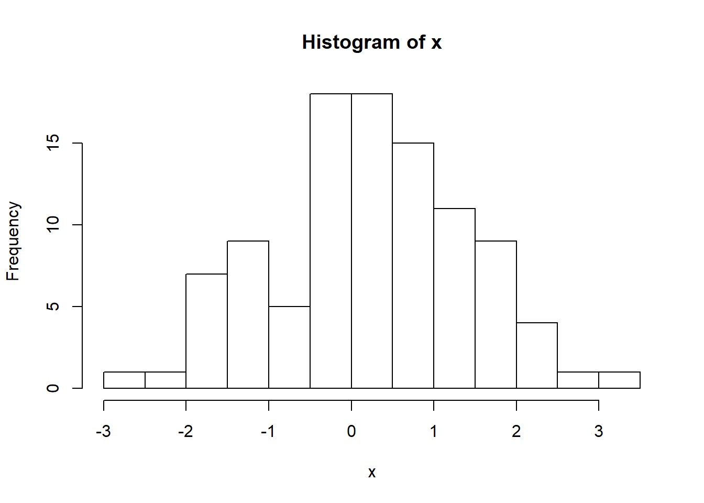
두 번째는 하나의 변수 x의 값이 이산형 (discrete) 일 경우에는 x가 갖는 각 값이 몇 개인지를 (count) 나타내기 위해서 bar 그래프를 그릴 수 있을 것 입니다. 아래 코드에서는 x 값 범주의 counting을 위해 table 함수를 사용하였습니다.
x <- sample(1:3, 100, replace = T)
count_x <- table(x)
barplot(count_x)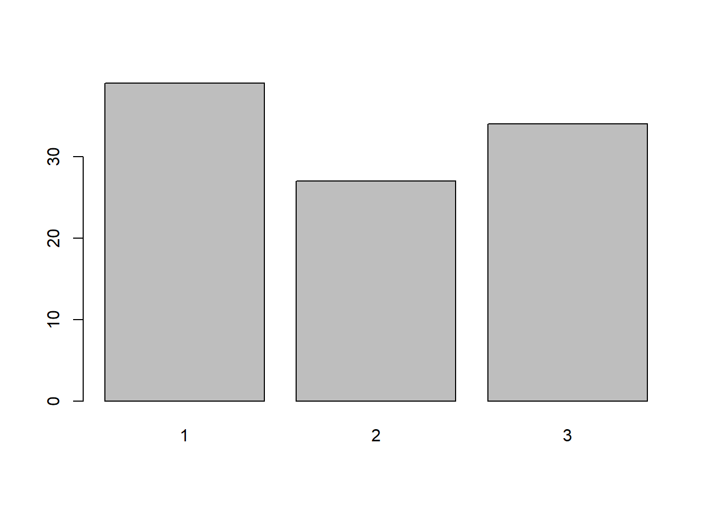
앞서 두 경우가 하나의 x 변수에 대한 값들을 bar graph로 표현한 경우라면 세 번째와 네 번째 경우는 변수가 두 개인 경우라고 볼 수 있습니다. 그 중 세번째 경우로 두 변수 x, y 가 있을 경우 x가 연속형 값을 갖고 y는 각 x 값의 빈도수를 나타내는 상황을 생각할 수 있습니다. 예를 들어 1.212값을 갖는 데이터가 20개이다 라는 상황을 가정할 경우 x=1.212 가 되고 y=20이 됩니다. 이 경우는 앞에서와 같은 카운팅은 필요 없이 x, y 값 그대로를 화면에 그려주면 됩니다.
x <- rnorm(10)
y <- rnorm(10)
plot(x, y, type="h")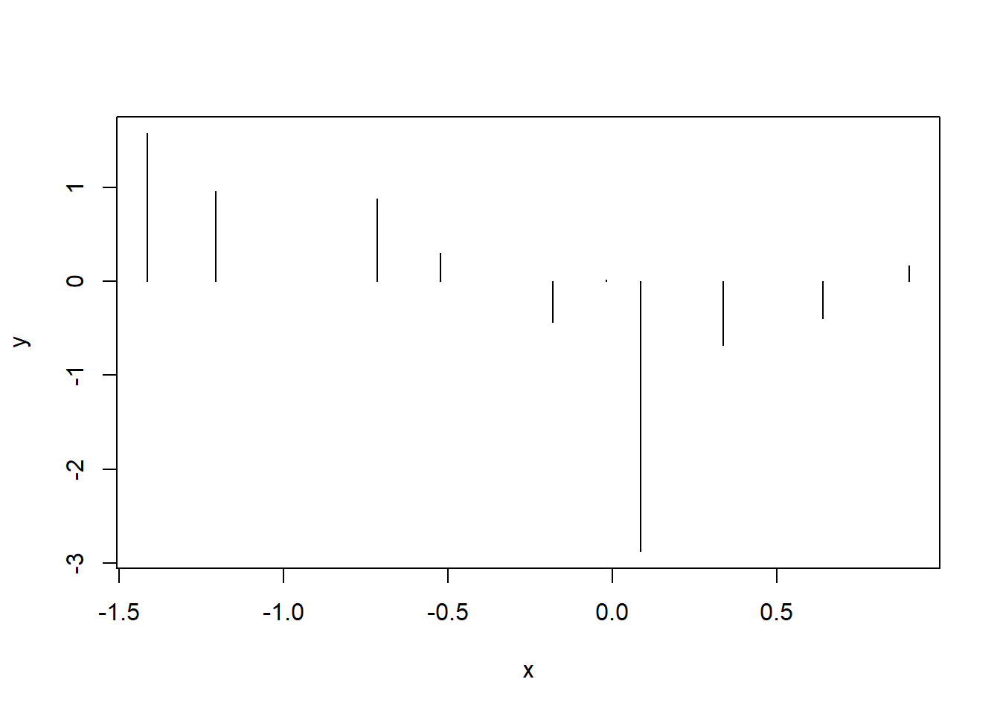
마지막으로 앞서와 같이 두 개의 변수로 이루어져 있으나 x가 연속형이 아닌 이산형 변수라는 점이 다릅니다. y는 각 x 값들의 빈도수를 나타내며 이 경우도 x의 빈도수가 y값에 저장되어 있으니 y 값 그대로를 화면에 그려주면 됩니다.
x <- 1:3
y <- table(sample(x, 100, replace = T))
barplot(y)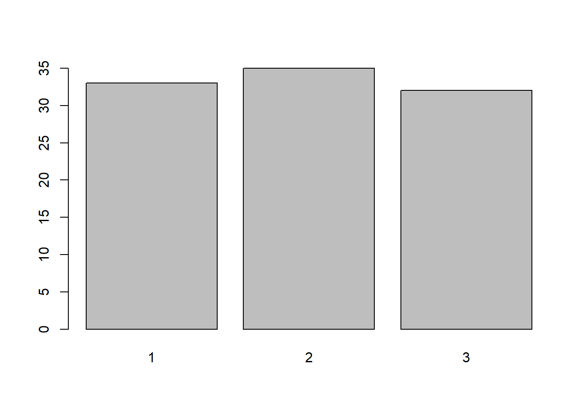
8.2 Bar graph with ggplot
이제 앞서와 같은 4가지 데이터들을 ggplot을 이용하여 차례로 bar graph를 그려 보겠습니다. ggplot의 사용은 강의 시간 설명을 참고하시고 간단히 ggplot 함수로 먼저 데이터와 aes로 (미학요소 또는 미적요소) x축 y축 등을 명시하고 + 오퍼레이터를 사용하여 필요한 레이어를 차례로 추가하면서 그래프를 그릴 수 있습니다.
x가 연속형일 경우 아래와 같이 histogram을 그려 줍니다. continuous 일 경우 stat은 bin으로 하면 특정 범위 안에 있는 값들의 빈도수를 계산하여 히스토그램을 그려줍니다.
dat <- data.frame(x1=rnorm(100))
ggplot(dat, aes(x=x1)) +
geom_bar(stat="bin", bins=30)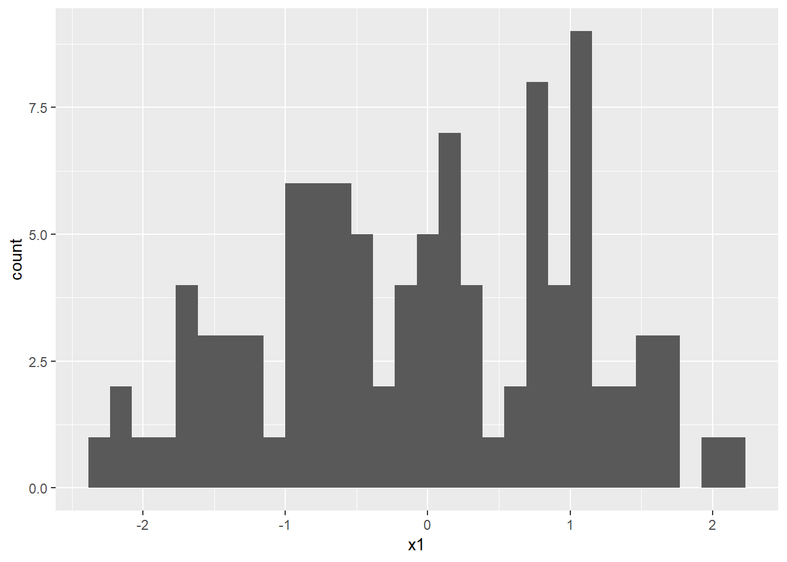
x가 이산형인 경우는 stat을 count로 설정하여 해당 값들의 빈도수를 그려줄 수 있으며
x <- sample(1:3, 100, replace = T)
dat <- data.frame(x=factor(x))
ggplot(dat, aes(x=x)) +
geom_bar(stat="count")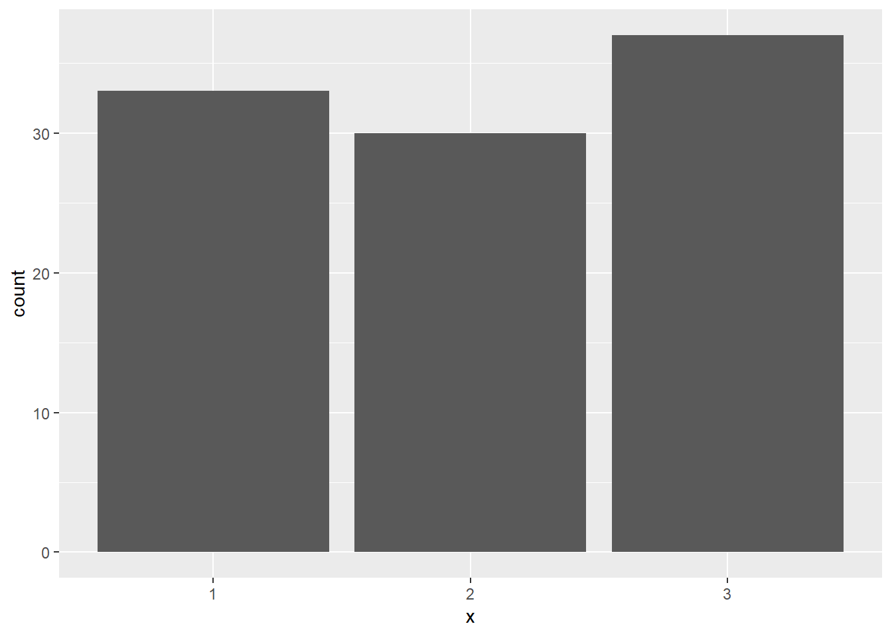
세 번째, 네 번째 경우 x, y 두 변수에서 y가 x의 빈도수를 저장하고 있을 경우 x가 연속형, 이산형에 상관 없이 stat을 identity로 설정하여 bar graph를 그릴 수 있습니다.
x <- rnorm(10)
y <- rnorm(10)
dat <- data.frame(x, y)
ggplot(dat, aes(x=x, y=y)) +
geom_bar(stat="identity")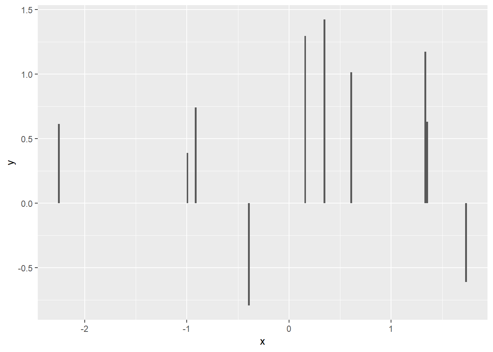
x1 <- as.factor(1:3)
y1 <- tabulate(sample(x1, 100, replace=T))
dat <- data.frame(x1, y1)
ggplot(dat, aes(x=x1, y=y1)) +
geom_bar(stat="identity") 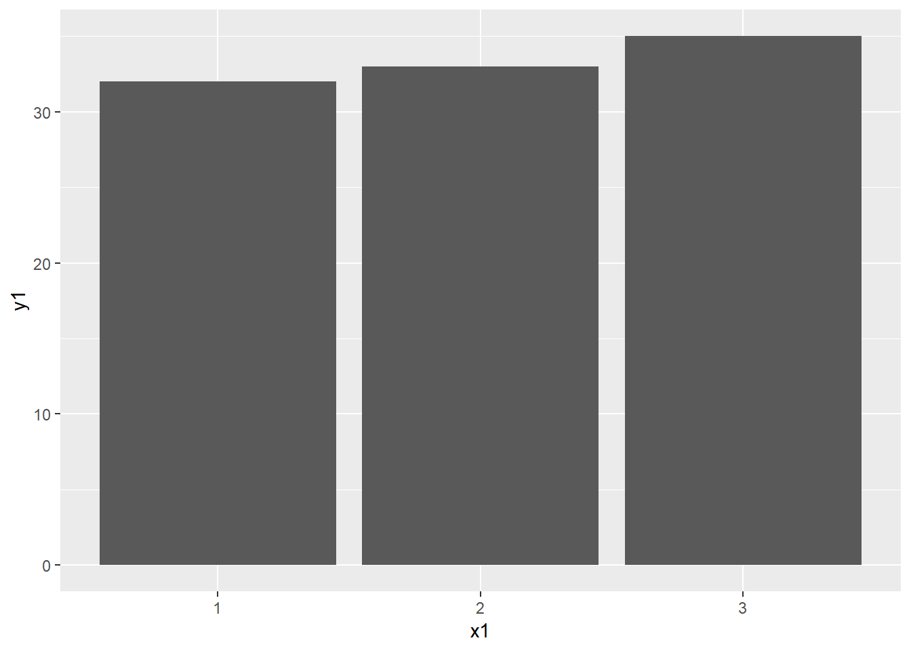
ggplot은 다음과 같이 다양한 레이어를 추가하여 필요한 기능을 사용할 수 있습니다.
x1 <- as.factor(1:3)
y1 <- tabulate(sample(x1, 100, replace=T))
dat <- data.frame(x1, y1)
ggplot(dat, aes(x=x1, y=y1, fill=x1)) +
geom_bar(stat="identity") +
guides(fill=FALSE) +
xlab("Discrete cases") +
ylab("Value") +
ylim(c(0,50))+
ggtitle("Bar graph for x:discrete and y:value")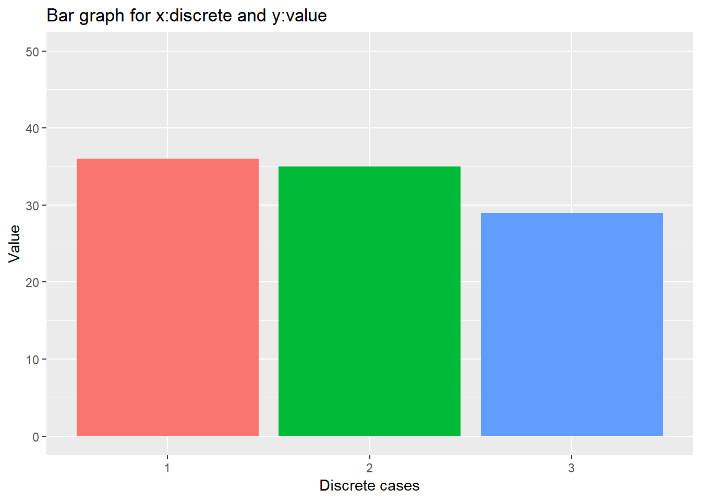
8.3 Line graph with ggplot
다음으로 ggplot을 이용한 line graph를 그리는 방법을 알아 봅니다. 앞서 bar graph와의 관계를 보면 line graph는 bar graph의 각 bar에 해당하는 값들을 서로 선으로 이어주는 graph라고 볼 수 있겠습니다.
Line graph는 geom_line이라는 함수를 사용해서 그릴 수 있으며 stat의 사용법은 앞서 bar graph와 같습니다. Line graph에서 중요한 점은 아래 group 파라미터 입니다. 선이라는 것은 두 점 이상의 값들을 알 경우에만 연결할 수 있고 ggplot에서는 같은 그룹에 (group) 속해있는 두 개 이상의 값들을 선으로 연결한다는 의미 입니다. 그런데 우리가 가진 데이터 dat 에는 group을 나타내는 변수가 없습니다. 따라서 group=1이라고 할 경우 모든 값들이 같은 1 그룹에 있는 것으로 간주되고 모든 값들을 선으로 연결하는 line 그래프가 그려집니다. bar그래프와 다른 점은 group=1과 geom_bar 대신 geom_line을 사용한 점입니다. 그리고 bar graph의 fill 옵션은 bar의 색을 결정하는 부분으로 line 그래프에서는 bar가 없으므로 사용하지 않습니다.
ggplot(dat, aes(x=x1, y=y1, group=1)) +
geom_line(stat="identity") +
guides(fill=FALSE) +
xlab("Discrete cases") + ylab("Value") +
ylim(c(0,50))+
ggtitle("Barplot for x:discrete and y:value")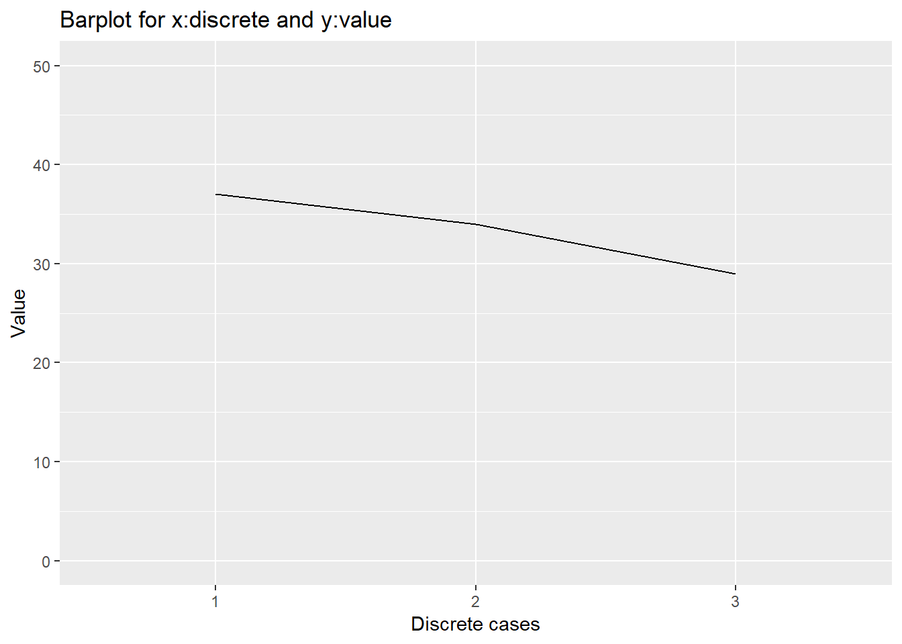
추가로 아래와 같이 그려지는 선의 두께를 조절하고 점을 추가로 그려볼 수 있습니다. 점을 그리는 명령어는 geom_point로서 line 과 함께 그리는 것 이므로 + 오퍼레이터를 사용하여 geom_line 과 함께 사용하면 됩니다.
ggplot(dat, aes(x=x1, y=y1, group=1)) +
geom_line(size=2) +
geom_point(size=4, pch=21, fill="white") +
guides(fill=FALSE) +
xlab("Discrete cases") + ylab("Value") +
ylim(c(0,50))+
ggtitle("Barplot for x:discrete and y:value")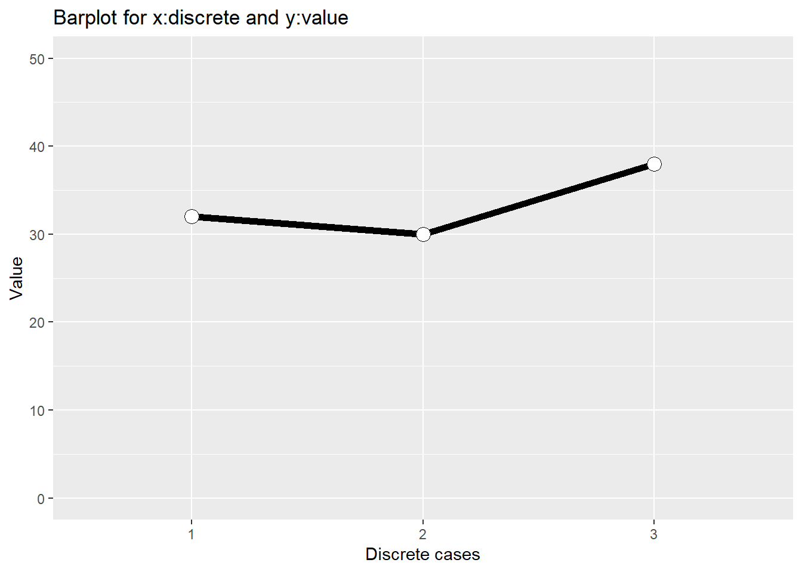
같은 방법으로 bar 또한 같이 그려줄 수 있습니다. 여기서는 fill 옵션이 geom_bar에 하나 geom_point에 하나씩 쓰였는데 이는 각 geometry에 따라서 필요한 옵션이 다르므로 각각의 geom_xxx 를 사용할 때 상황에 맞게 (help 나 예제를 통해서) 사용하시면 되겠습니다.
ggplot(dat, aes(x=x1, y=y1, group=1)) +
geom_bar(stat="identity", fill=x1) +
geom_line(size=2) +
geom_point(size=4, pch=21, fill="white") +
guides(fill=FALSE) +
xlab("Discrete cases") + ylab("Value") +
ylim(c(0,50))+
ggtitle("Barplot for x:discrete and y:value")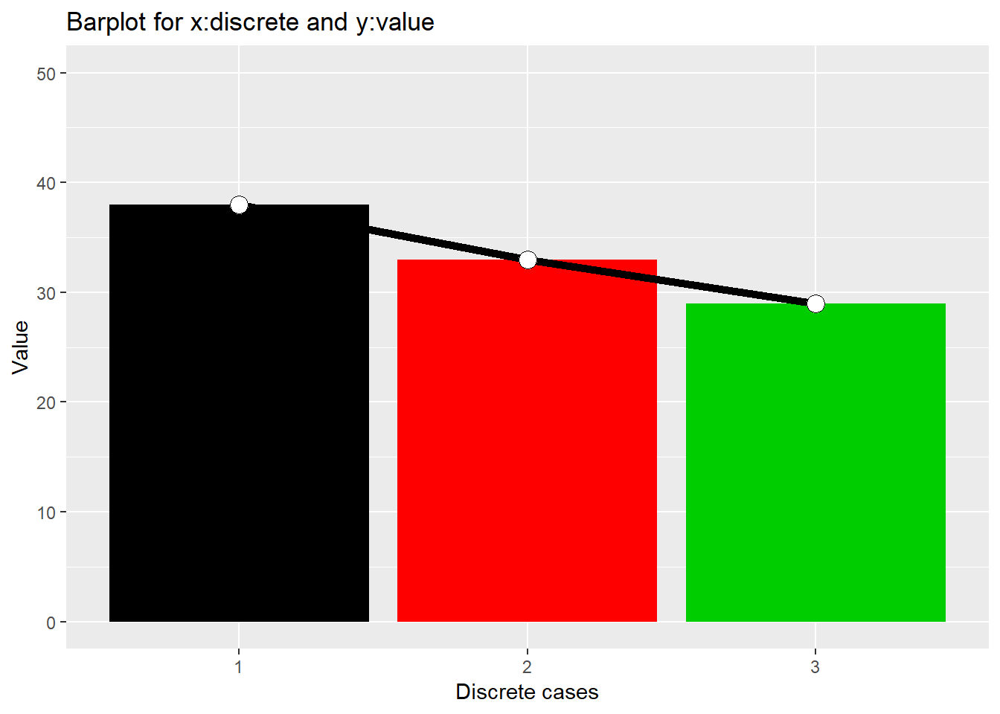
8.4 Bar graph of the example dataset
지난 시간까지 작성했던 엑셀 읽는 함수를 사용해서 (비교적 큰) 실제 데이터를 읽어오고 ggplot을 이용하여 bar graph를 그리는 실습을 합니다. 지난 시간 간단히 bargraph를 그려 보았으나 평균, 표준편차를 구할 필요성이 있었으며 비교적 큰 데이터셋에서 그러한 정보를 뽑아내기 위해 ddplyr 이라는 것을 이용할 것이라고 말씀 드리고 마쳤습니다. 이번 시간 ddplyr의 사용법을 아래에서 배울 예정이며 실제 아래 예제를 가지고 평균, 표준편차 bargraph를 그리는 것은 다음 시간에 실습 하도록 하겠습니다. 대신 지난 시간 그렸던 bargraph를 수정된 데이터가 지고 다시 그려보도록 하겠습니다.
아래 일련의 코드를 실행하면 bargraph를 그릴 수 있으며 연속형으로 되어있는 농도 (concentration)을 이산형으로 바꾸는 과정 및 ggplot을 이용한 bargraph 그리는 과정은 지난시간에 이어 수업시간에 말씀드린 내용을 참고하시면 되겠습니다.
source("read_plate.R")
design_file_name <- "exp_design2.xlsx"
data_file_names <- c("20171012-phenol-1.xls",
"20171012-phenol-2.xls",
"20171227-phenol-1.xls",
"20171227-phenol-2.xls")
mydata1 <- multiple_plate_excel_reader2(design_file_name, data_file_names[1], sheet4design=1)
mydata2 <- multiple_plate_excel_reader2(design_file_name, data_file_names[2], sheet4design=2)
mydata3 <- multiple_plate_excel_reader2(design_file_name, data_file_names[3], sheet4design=3)
mydata4 <- multiple_plate_excel_reader2(design_file_name, data_file_names[4], sheet4design=4)
mydata <- rbind(mydata1, mydata2, mydata3, mydata4)
mydata2 <- mydata
mydata2$concentration <- as.factor(mydata2$concentration)
ggplot(data=mydata2, aes(x=sample_names, y=GFP, fill=concentration)) +
geom_bar(stat="identity", position="dodge", color="black") +
scale_fill_manual(values = heat.colors(11))
8.5 ddplyr - pipe operator
dplyr은 테이블형 데이터를 다루기 위한 도구를 제공하는 매우 편리한 패키지 입니다. 앞서 ggplot의 + 오퍼레이터와 같이 %>% 파이프 오퍼레이터를 사용하여 여러 함수를 연속적으로 사용할 수 있으며 R의 장점 중 하나인 apply와 같은 행렬 연산 기능을 subset, split, group 와 같은 행렬 편집 기능과 더하여 만들어낸 도구라고 할 수 있습니다.
먼저 파이프 오퍼레이터 %>% 의 작동법은 간단히 %>%의 왼쪽 코드의 결과를 출력으로 받아 오른쪽 코드의 입력 (첫번째 파라미터의 값)으로 받아들이는 작동을 합니다. 다음 예에서 보면 sin(pi) 와 같은 함수의 일반적인 사용법 대신 pi %>% sin 처럼 사용해도 똑같은 결과를 보여줍니다. cos(sin(pi))와 같이 여러 합수를 중첩하여 사용할 경우에도 코드 디자인의 가독성이나 효율 측면에서 크게 향상된 방법을 제공해 줍니다.
library(dplyr)
pi %>% sin## [1] 1.224606e-16sin(pi)## [1] 1.224606e-16pi %>% sin %>% cos## [1] 1cos(sin(pi))## [1] 1특히 %>%는 이후 설명할 dplyr의 group_by, split, filter, summary 등의 행렬 편집/연산 함수를 빈번히 다양한 조합으로 쓰게되는 상황에서 더 큰 효과를 발휘할 수 있습니다. 그에 앞서 pipe 오퍼레이터의 예제를 좀 더 살펴보겠습니다.
pipe operator의 왼쪽 구문의 결과가 오른쪽 구문의 입력으로 처리된다고 설명드렸지만 엄밀히 따지면 오른쪽 구문의 첫 번째 파라미터의 입력 값으로 처리되는 것 입니다. 즉, 함수에서 사용되는 파라미터가 여러개일 경우가 있으므로 기본적으로 %>% 의 왼쪽 구문의 출력 값은 오른쪽 구문 (함수)의 첫 번째 인자의 입력값으로 들어가는 것 입니다. 이는 다음 예들을 통해서 명확히 알 수 있습니다. 먼저 paste함수는 그 파라미터로 ,로 구분되는 여러개의 입력 값을 가질 수 있습니다. 따라서 다음 코드는 x가 paste의 첫 번째 파라미터로 들어가게 되어 "1a", "2a", "3a", "4a", "5a" 로 a 앞에 x 값들이 붙어서 출력된 것을 알 수 있습니다.
x <- 1:5
x %>% paste("a", sep="")## [1] "1a" "2a" "3a" "4a" "5a"특정 데이터셋의 컬럼별 평균을 구하고 각 평균의 합을 구할 경우를 생각해 봅시다. R에서는 colMeans라는 특별한 함수를 제공하여 컬럼별로 평균을 계산해 줍니다. 그 후 sum 함수를 사용하여 최종 원하는 값을 얻을 수 있습니다. 이러한 코드를 %>% 오퍼레이터를 사용한 경우의 코드와 비교해 볼 수 있습니다.
x <- data.frame(x=c(1:100), y=c(201:300))
sum(colMeans(x))## [1] 301x <- data.frame(x=c(1:100), y=c(201:300))
x %>% colMeans %>% sum## [1] 301그럼 만약 두 번째 파라미터에 입력으로 왼쪽 구문의 출력을 받아들이고 싶을 경우는 어떻게 할까요? 그럴때는 place holer라는 . 을 사용하면 되겠습니다. round 함수는 두 개의 파라미터를 가지고 digits 값을 pipe operator로 넘겨주고 싶을 경우 아래와 같이 표현할 수 있습니다.
6 %>% round(pi, digits=.)## [1] 3.141593round(pi, digits=6)## [1] 3.1415938.6 dplyr - Important functions
이제 본격적인 dplyr 함수를 사용해 보겠습니다. dplyr을 구성하는 중요한 함수는 다음 6가지가 있습니다.
- select() - select columns
- filter() - filter rows
- arrange() - re-order or arrange rows
- mutate() - create new columns
- summarise() - summarise values
- group_by() - allows for group operations in the “split-apply-combine” concept
이 함수들은 %>%와 함께 쓰이면서 강력한 성능을 발휘합니다. summarise 함수는 특정 값들의 통계 값을 계산해 주는 함수이며 그 외 5개 함수들은 행렬 편집을 위한 함수들로 보시면 되겠습니다. 각각의 설명보다는 직접 간단한 예제를 수행하면서 각각의 기능을 살펴보고 왜 dplyr이 널리 사용되고 그 장점이 무엇인지 파악해 보도록 하겠습니다.
예제에 사용할 데이터는 iris 데이터로 R을 설치하면 기본으로 들어있는 데이터 입니다. 세 종류의 iris 품종에 대한 꽃잎과 꽃받침의 length와 with를 측정해 놓은 데이터 입니다. head와 str 명령어를 이용해서 데이터를 살펴 봅니다. %>%를 배웠으니 써보겠습니다.
iris %>% head(10)## Sepal.Length Sepal.Width Petal.Length Petal.Width Species
## 1 5.1 3.5 1.4 0.2 setosa
## 2 4.9 3.0 1.4 0.2 setosa
## 3 4.7 3.2 1.3 0.2 setosa
## 4 4.6 3.1 1.5 0.2 setosa
## 5 5.0 3.6 1.4 0.2 setosa
## 6 5.4 3.9 1.7 0.4 setosa
## 7 4.6 3.4 1.4 0.3 setosa
## 8 5.0 3.4 1.5 0.2 setosa
## 9 4.4 2.9 1.4 0.2 setosa
## 10 4.9 3.1 1.5 0.1 setosairis %>% str## 'data.frame': 150 obs. of 5 variables:
## $ Sepal.Length: num 5.1 4.9 4.7 4.6 5 5.4 4.6 5 4.4 4.9 ...
## $ Sepal.Width : num 3.5 3 3.2 3.1 3.6 3.9 3.4 3.4 2.9 3.1 ...
## $ Petal.Length: num 1.4 1.4 1.3 1.5 1.4 1.7 1.4 1.5 1.4 1.5 ...
## $ Petal.Width : num 0.2 0.2 0.2 0.2 0.2 0.4 0.3 0.2 0.2 0.1 ...
## $ Species : Factor w/ 3 levels "setosa","versicolor",..: 1 1 1 1 1 1 1 1 1 1 ...데이터를 확인한 후 분석을 시작합니다. 분석은 간단히 각 iris 품종별로 꽃과 꽃받침의 평균을 비교하는 것으로 합니다.
dplyr의 전신이라 할 수 있는 plyr 패키지는 다음과 같이 설명이 되어 있습니다. A set of tools for a common set of problems: you need to split up a big data structure into homogeneous pieces, apply a function to each piece and then combine all the results back together. 즉 split-apply-combine 세 가지 동작을 쉽게 할 수 있도록 만들어 놓은 툴 입니다. R이 다른 언어에 비해 데이터 분석에서 주목을 받는 이유로 split, apply 등의 행렬 연산 함수가 발달한 것을 내세우는데 dplyr은 이들보다 더 편리하게 데이터 조작을 할 수 있도록 만들어 놓은 것 입니다.
이제 split, apply, combine을 활용하여 평균을 구하는 코드와 dplyr 패키지를 사용하여 만든 코드를 비교해 보도록 하겠습니다. split은 factor형 변수인 Species를 기준으로 iris 데이터를 나누어 주는 역할을 하며 lapply는 list 형 데이터인 iris_split을 각 리스트의 각각의 원소들에 대해서 function(x) 를 수행하는 역할을 합니다. 마지막 data.frame으로 최종 경로를 merge 합니다.
iris_split <- split(iris, iris$Species)
iris_means <- lapply(iris_split, function(x){colMeans(x[,1:4])})
iris_means_df <- data.frame(iris_means)
iris_means_df## setosa versicolor virginica
## Sepal.Length 5.006 5.936 6.588
## Sepal.Width 3.428 2.770 2.974
## Petal.Length 1.462 4.260 5.552
## Petal.Width 0.246 1.326 2.026위 코드를 한 줄로 사용하여 최종 iris_means_df 데이터를 를 구한다면 다음과 같이 됩니다. 한눈에 코드가 들어오지 않고 이렇게 중첩해서 함수를 사용하는 습관은 어떤 프로그래밍 언어에서도 권장하지 않습니다.
iris_means_df <- data.frame(lapply(split(iris, iris$Species), function(x){colMeans(x[,1:4])}))아래는 dplyr 패키지를 사용한 코드 입니다.
iris_means_df2 <- iris %>% group_by(Species) %>% summarise_all(mean)
iris_means_df2## # A tibble: 3 x 5
## Species Sepal.Length Sepal.Width Petal.Length Petal.Width
## <fct> <dbl> <dbl> <dbl> <dbl>
## 1 setosa 5.01 3.43 1.46 0.246
## 2 versicolor 5.94 2.77 4.26 1.33
## 3 virginica 6.59 2.97 5.55 2.03위에서 보듯 dplyr 패키지를 사용할 경우 그 결과는 같으나 코드의 가독성과 효율성면에서 장점을 보여줍니다. 여기서 group_by, summarise_all 함수 등의 사용법은 help 페이지를 참고해 주세요. 간단히 iris 데이터를 받아서 Species에 명시된 그룹으로 나누고 mean 함수를 모든 컬럼에 대해서 사용하라는 의미 입니다.
이제 ggplot을 이용하여 각 평균에 대한 barplot을 그려보도록 하겠습니다. 지난 예제와는 달리 ggplot에서는 data만 명시해 주고 geom_bar에 aes와 stat을 모두 사용한 것이 다릅니다. ggplot 구문에서 지정해주는 aes 등의 옵션은 하위 geom_xxx 레이어들에 모두 적용이 되고 각 geom_xxx 레이어에서 지정해주는 aes는 해당 레이어에서만 효과를 나타냅니다.
ggplot(iris_means_df2) +
geom_bar(aes(x=Species, y=Sepal.Length), stat="identity") 
마지막으로 위 dplyr 패키지를 ggplot 과 함께 사용할 수도 있습니다. 보통은 앞서와 같이 결과를 특정 변수에 저장한 후 도표 등을 그리지만 다음과 같이 %>% 를 사용하여 plot 까지 함께 볼 수도 있습니다.
iris %>%
group_by(Species) %>%
summarise_all(mean) %>%
ggplot() +
geom_bar(aes(x=Species, y=Sepal.Length), stat="identity") 
다음시간에는 dplyr 패키지를 이용하여 실제 예제 데이터의 평균과 표준편차를 구해보고 bar graph외 산포도, heatmap 등의 실습을 해 보도록 하겠습니다.